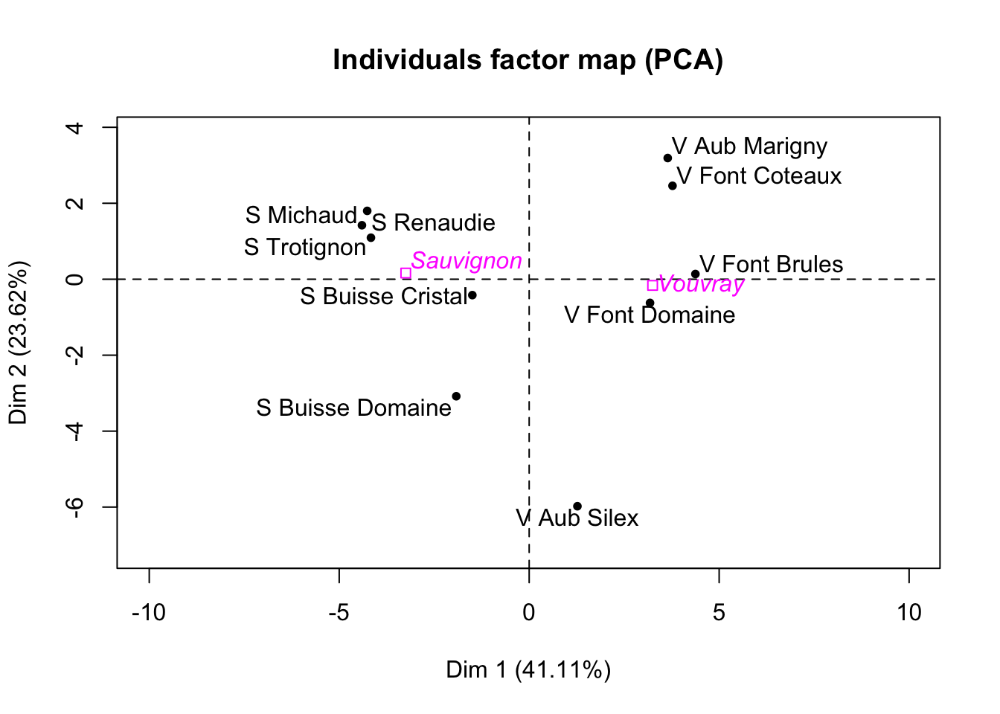

Chapter 10 Homework: PCA
10.1 PCA on random data
We have a data table with 4 rows and 10 independent variables. Without performing the PCA, do we have an idea of the shape of the correlation circle obtained? Simulate and comment. (You can increase the number of rows, also look at cases with 10 rows and 2000 variables, etc..)
A needle in a haystack? Simulate a table with 500 samples and 335 variables (330 independent variables and 5 variables highly correlated). Perform the PCA. Then, decrease the sample size \(n\)=100, 50, 20. Comment.
Generate a data set with 500 rows and 150 columns from independent gaussian variables. Comment the shape of the barplot of the eigenvalues. Should you refer to the theory? What are we expecting?
Write a program to obtain the tables of the lecture slides. “Percentage of variability under the null”.
Does it make sense to consider Gaussian data? Try to give some theoretical arguments, what could we do as an alternative?
10.2 PCA by hand
Exam 2016
library(FactoMineR)
library(ggplot2)(Q1) You have a data set with \(n\) rows and \(p\) variables. Your aim is to find two synthetics variables that “best summarize” the individuals. Explain what is your suggestion and gives the object (the output in the PCA function) where you can retrieve the result.
Import the data Expert_wine.csv. The aim is to do a PCA on this data set, without using the function PCA of FactoMineR. Be careful not to include qualitative variables. First, run the function PCA of FactoMineR. Note that by default of the PCA function, the data is centered and standardized by columns. Besides, for each column \(j\), the empirical variance used to standardize the column is
\[ \hat{\sigma}_j = \frac{1}{n}\sum_{i=1}^n (x_{ij}-\bar{x}_j) \: , \qquad \bar{x}_j = \frac{1}{n} \sum_{i=1}^n x_{ij} \]
where \(n\) is the number of rows of the data (here \(n=10\)). Be careful, in R the scale function computes the empirical variance as follows:
\[ \hat{\sigma}_j = \frac{1}{n-1}\sum_{i=1}^n (x_{ij}-\bar{x}_j) \: , \qquad \bar{x}_j = \frac{1}{n} \sum_{i=1}^n x_{ij} \]
(R1) In a few lines of code, recover by yourself the eigenvalues found with PCA of FactoMineR.
(R2) In a few lines of code, recover the projections of the individuals (the coordinates of the individuals) on the 2 first principal axis.
(Q2) From the preceding question, you obtain 2 vectors of dimension \(10\). Show (theoretically) that their empirical variances are respectively the first and the second eigenvalues of the PCA (given by PCA of FactoMineR for example).

## S Michaud S Renaudie S Trotignon S Buisse Domaine
## -4.440892e-15 -1.776357e-15 -5.329071e-15 -1.088019e-14
## S Buisse Cristal V Aub Silex V Aub Marigny V Font Domaine
## -3.552714e-15 -1.110223e-14 9.325873e-15 4.884981e-15
## V Font Brules V Font Coteaux
## 8.881784e-15 1.110223e-14## Warning in svdM$d - resPCA$eig$eigenvalue: la taille d'un objet plus long
## n'est pas multiple de la taille d'un objet plus court## [1] -1.002805 1.426807 2.427074 2.491577 2.473375 2.181726
## [7] 2.044241 1.592458 1.475476 -11.921255## Warning in svdM$d^2 - resPCA$eig$eigenvalue: la taille d'un objet plus long
## n'est pas multiple de la taille d'un objet plus court## [1] 0.000000e+00 1.154632e-14 0.000000e+00 2.664535e-15 1.776357e-15
## [6] 4.440892e-16 1.554312e-15 9.436896e-16 -5.551115e-16 -1.192125e+0110.3 Other applications to practice
10.3.1 Ozone data
Air pollution is currently one of the most serious public health worries worldwide. Many epidemiological studies have proved the influence that some chemical compounds, such as sulphur dioxide (SO2), nitrogen dioxide (NO2), ozone (O3) can have on our health. Associations set up to monitor air quality are active all over the world to measure the concentration of these pollutants. They also keep a record of meteorological conditions such as temperature, cloud cover, wind, etc. Here the final aim is to analyse the relationship between the maximum daily ozone level and meteorological variables. We have at our disposal 112 observations collected during the summer of 2001 in Rennes. Before trying to build a prediction model, we will inspect the data with a PCA and illustrate the reconstruction property of PCA. The variables available are maxO3 (maximum daily ozone), maxO3v (maximum daily ozone the previous day), T12 (temperature at midday), T9, T15 (Temp at 3pm), wind (direction), rain and Vx12 (projection of the wind speed vector on the east-west axis at midday), Vx9 and Vx15, as well as the Nebulosity (cloud) Ne9, Ne12, Ne15. The data is contained in the file ozone.txt.
- Perform the PCA on the ozone data (also using the categorical variables) and give a short interpretation of the first dimensions of variability (interpretation of the observations plot, correlation between variables, percentage of variability, etc.). The variable maxO3 that we want to predict using a regression model for instance can be put as a supplementary variable in the analysis. Explain the interest of perfoming this PCA before a regression.
10.3.2 Mice microarray data and fatty acid concentration
The data comes from Agrocampus genetics department (S. Lagarrigue). This is an experiment with 40 mice of 2 genotypes (wild, PPAR\(\alpha\)-deficient). In the field of molecular biology, the peroxisome proliferator-activated receptors (PPARs) are a group of nuclear receptor proteins that function as transcription factors regulating the expression of genes. PPARs play essential roles in the regulation of cellular differentiation, development, and metabolism (carbohydrate, lipid, and protein) of higher organisms. PPAR\(\alpha\) are expressed in liver, kidney, heart, muscle, adipose tissue, and others. The mice endured 5 diet conditions: dha, efad, lin, ref, tsol. More precisely, dha: diet rich in fatty acids of the Omega 3 family and particularly docosahexaenoic acid (DHA), based on fish oil; efad (Essential Fatty Acid Deficient): diet based on saturated fatty acids only, made from hydrogenated coconut oil; lin: diet rich in Omega 3, made from linseed oil; ref: regime with seven times more Omega 6 than Omega 3; tsol: diet rich in Omega 6, based on sunflower oil. At the end of the diet, the genes were analysed using DNA chips, and the expression of 120 genes retained for all the mice. The aim of the study is to see whether the genes are expressed differently depending on the situation of stress. We also have 21 hepatic fatty acid concentration. Two groups of different king of variables are available (genes/fatty acid). \
The idea is to highligh the interest of using supplementary variables. First, we consider separate PCAs. Perform the PCA on the fatty acid data and use the genes data as supplementary variables. Comment these choices and the obtained results. Then, consider the other way. Data can be found at http://factominer.free.fr/docs/souris.csv.
10.3.3 Chicken microarray data
This is an experiment with 43 chickens with six diet conditions: normal diet (N), fasting for 16 hours (F16), fasting for 16 hours then refed for 5 hours (F16R5), fasting for 16 hours then refed for 16 hours (F16R16) fasting for 48 hours (F48), and fasting for 48 hours then refed for 24 hours (F48R24). At the end of the diet, the genes were analyzed using DNA chips, and the expression of 7407 genes retained for all the chickens. The data were then preprocessed in a standard manner for DNA chips (normalisation, eliminating the chip effect, etc.). The aim of the study is to see whether the genes are expressed differently depending on the situation of stress. More precisely, it may be interesting to see how long the chicken needs to be refed after fasting before it returns to a normal state, i.e., a state comparable to the state of a chicken with a normal diet. Might some genes be underexpressed during fasting and overexpressed during feeding? Data can be found at http://factominer.free.fr/docs/chicken.txt
10.4 Low rank matrix approximation - reconstruction with PCA
Let’s look at the low-rank (say \(k\)) approximation of the ozone data.
- With the PCA outputs, one could reconstruct the data. First, reconstruct the data with one dimension. You should be aware that with the results of PCA, you could reconstruct the centered and scaled data.
- You can observe the difference between \(X\) and \(\hat X\) (noted HatX1dim) by looking at the following plot for the variable maxO3y:
plot(ozone[,"maxO3y"], type = "l")
lines(HatX1dim[,"maxO3v"], col = 2)Comment.
- Build a function to reconstruct the data with a specific number of dimensions. Then, reconstruct the data with 2 to 4 dimensions and represent different variables (observed and estimated). Comment your results with respect to the correlation circle.
10.5 Reconstruct an image
Import the data missing.jpg or breton.png and reconstruct the image with 1 to 100 dimensions. There are different packages dedicated to images. With the following lines of code, you could read an image, reprensent it and then transform it in a grey scale. (Be careful that you may need to execute the code in the R console and not by knitting).
source("https://bioconductor.org/biocLite.R")
biocLite("EBImage")library("EBImage")
img <- readImage("data/missing.jpg")
display(img, method = "raster")
library(ripa)
r <- imagematrix(img, type = "grey")
display(r, method = "raster")Using the grey image (r), reconstruct the image with 1 to 100 dimensions and export the reconstructed images in a folder with the names “missing_ncp_1” to “missing_ncp_100”. You could use the packages “jpeg” and “png” to export the image with functions ‘writePNG’ for instance. Comment.